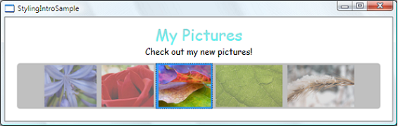
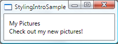
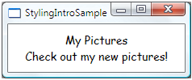
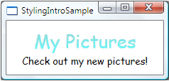
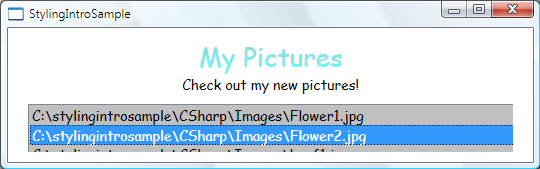
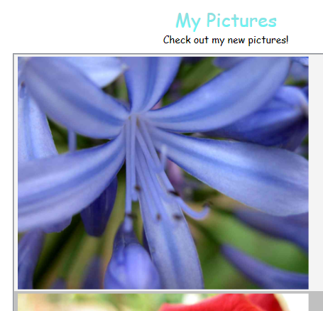
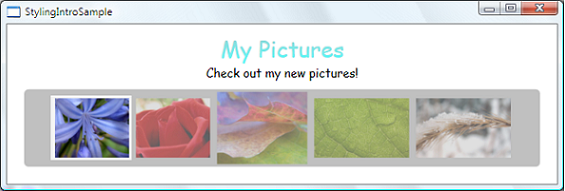
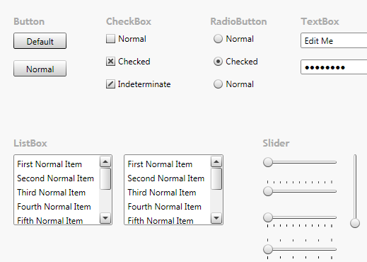

Стилизация и использование шаблонов
Windows Presentation Foundation (WPF) Стилизация и использование шаблонов относятся к набору возможностей (стили, шаблоны, триггеры и раскадровки), которые позволяют разработчикам и дизайнерам создавать визуально привлекательные эффекты и создавать согласованный внешний вид своего продукта. Несмотря на то что разработчики и дизайнеры могут создавать внешний вид отдельно для каждого приложения, надежная модель стилизации и использования шаблонов необходима для поддержки и совместного использования внешнего вида как внутри одного приложения, так и в ряде приложений. Windows Presentation Foundation (WPF) предоставляет такую модель.
Еще одной возможностью модели стилизации WPF является разделение представления и логики. Это означает, что дизайнеры могут создавать внешний вид приложения только с помощью XAML в то же самое время, когда разработчики работают над логикой программы, используя языки C# или Visual Basic.
В этом обзоре основное внимание уделяется аспектам стилизации и использования шаблонов приложения и не рассматриваются концепции привязки данных. Подробнее о привязке данных см. в разделе Общие сведения о привязке данных.
Также важно иметь представление о ресурсах, которые позволяют повторно использовать стили и шаблоны. Дополнительные сведения о ресурсах см. в разделе Ресурсы XAML.
Пример стилизации и использования шаблонов
В примерах кода, приведенных в этом обзоре, используется простой пример фото, показанный ниже:

В этом простом примере фото стилизация и шаблоны применяются для создания привлекательного интерфейса. Пример содержит два TextBlock элементов и ListBox элемента управления, привязанный к списку изображений. Полный пример см. в разделе Вводная часть примера стилизации и использования шаблонов.
Основы стилей
Можно представить себе Style как удобный способ применения набора значений свойств к более чем одного элемента. Например, рассмотрим следующие TextBlock элементов и их внешний вид по умолчанию:
Warning
It looks like the sample you are looking for does not exist.

Можно изменить внешний вид по умолчанию, задав свойства, такие как FontSize и FontFamily, на каждом TextBlock напрямую. Тем не менее если вы хотите, чтобы ваши TextBlock элементов совместно использовать некоторые свойства, можно создать Style в Resources части вашей XAML файл, как показано ниже:
Warning
It looks like the sample you are looking for does not exist.
Warning
It looks like the sample you are looking for does not exist.
Warning
It looks like the sample you are looking for does not exist.
При задании TargetType стиля TextBlock , стиль применяется ко всем TextBlock элементы в окне.
Теперь TextBlock элементов будет выглядеть следующим образом:

Расширение стилей
Возможно, вам необходимо два TextBlock элементы, чтобы совместно использовать некоторые свойства, такие как FontFamily и выровнять по центру HorizontalAlignment, и при этом текст «Мои рисунки» обладал некоторыми дополнительными свойствами. Это можно сделать, создав новый стиль на основе первого стиля, как показано ниже:
Warning
It looks like the sample you are looking for does not exist.
Warning
It looks like the sample you are looking for does not exist.
Warning
It looks like the sample you are looking for does not exist.
Обратите внимание, что предыдущий стиль получил атрибут x:Key. Чтобы применить стиль, вы установите Style свойство вашей TextBlock для x:Key значение, как показано ниже:
Warning
It looks like the sample you are looking for does not exist.
Это TextBlock теперь имеет стиль HorizontalAlignment значение Center, FontFamily значение Comic Sans MS, FontSize значение 26 и Foreground значение LinearGradientBrush показано в примере. Обратите внимание, что этот параметр переопределяет FontSize значение базового стиля. Если имеется более одного Setter одного свойства Style, Setter то есть объявленный последнего имеет больший приоритет.
Ниже показано TextBlock элементов будет выглядеть так:

Это TitleText стиля расширяет стиль, который был создан для TextBlock типа. Можно также расширить стиль, имеющий атрибут x:Key, используя значение атрибута x:Key. Например, см. пример для BasedOn свойство.
Связь свойства TargetType и атрибута x:Key
Как показано в первом примере, установка TargetType свойства TextBlock без присвоения стилю x:Key вызывает стиль, применяемый ко всем TextBlock элементов. В этом случае для x:Key неявно устанавливается значение {x:Type TextBlock}. Это означает, что если явно задать x:Key значение, отличное от {x:Type TextBlock}, Style применяется не ко всем TextBlock элементов автоматически. Вместо этого необходимо применить стиль (с помощью x:Key значение) для TextBlock элементы явным образом. Если стиль находится в разделе ресурсов и не устанавливайте TargetType свойство в стиле, то необходимо предоставить x:Key.
Помимо предоставления значение по умолчанию для x:Key, TargetType свойство задает тип, к которому применяются свойства метода задания. Если вы не укажете TargetType, необходимо уточнить свойства в вашей Setter объектов с именем класса, используя синтаксис Property="ClassName.Property". Например, вместо того чтобы задавать Property="FontSize", необходимо задать Property для "TextBlock.FontSize" или "Control.FontSize".
Также обратите внимание, что многие элементы управления WPF являются сочетанием других элементов управления WPF. Если создать стиль, который применяется ко всем элементам управления типа, можно получить непредвиденные результаты. Например, если создать стиль, предназначенный TextBlock введите в Window, стиль применяется ко всем TextBlock элементов управления в окне, даже если TextBlock является частью другого элемента управления, такие как ListBox.
Стили и ресурсы
Можно использовать стиль для любого элемента, который является производным от FrameworkElement или FrameworkContentElement. Наиболее распространенный способ объявления стиля — это его объявление в качестве ресурса в разделе Resources файла XAML, как было показано в предыдущих примерах. Так как стили являются ресурсами, для них действуют те же правила области видимости, которые применяются ко всем ресурсам. Область, в которой объявлен стиль, влияет на область применения стиля. Например, если объявить стиль в корневом элементе файла XAML определения приложения, стиль может использоваться в любом месте приложения. Если вы создаете приложение навигации и объявляете стиль в одном из файлов XAML приложения, стиль можно будет использовать только в этом файле XAML. Подробнее о правилах видимости ресурсов см. в разделе Ресурсы XAML.
Кроме того, дополнительные сведения о стилях и ресурсах можно найти в разделе Совместно используемые ресурсы и темы данного обзора.
Программная установка стилей
Чтобы программным способом назначить именованный стиль элементу, Возьмите этот стиль из коллекции ресурсов и его назначение этого элемента Style свойство. Обратите внимание, что элементы в коллекции ресурсов имеют тип Object. Таким образом, необходимо привести полученный стиль для Style перед назначением его Style свойство. Например, чтобы задать определенный TitleText стиль над TextBlock с именем textblock1, выполните следующие действия:
Warning
It looks like the sample you are looking for does not exist.
Warning
It looks like the sample you are looking for does not exist.
Обратите внимание, что после применения стиля он фиксируется и не может быть изменен. Если необходимо динамически изменить стиль, который уже был применен, нужно создать новый стиль для замены существующего. Дополнительные сведения см. в описании свойства IsSealed.
Можно создать объект, который выбирает стиль, который нужно применить, основываясь на собственной логике. Например, см. пример для StyleSelector класса.
Привязки, динамические ресурсы и обработчики событий
Обратите внимание, что свойство Setter.Value можно использовать для задания привязки расширения разметки или расширения разметки DynamicResource. Дополнительные сведения см. в примерах для Setter.Value свойство.
На данный момент этот обзор касается только использования методов задания для установки значений свойств. В стиле также можно задать обработчики событий. Дополнительные сведения см. в разделе EventSetter.
Шаблоны данных
В этом примере приложения есть ListBox элемента управления, привязанный к списку фотографий:
Warning
It looks like the sample you are looking for does not exist.
Это ListBox в данный момент выглядит следующим образом:

Большинство элементов управления имеют некое содержимое, и это содержимое часто поступает из данных, к которым осуществляется привязка. В этом примере такими данными является список фотографий. В WPF, использовании DataTemplate для определения визуального представления данных. По сути, что вы поместите в DataTemplate определяет вид данных в отображаемом приложении.
В нашем примере приложения каждый пользовательский объект Photo имеет свойство Source строкового типа, которое задает путь к файлу изображения. Сейчас объекты фотографий отображаются как пути к файлам.
Чтобы фотографии отображались как изображения, создании DataTemplate как ресурс:
Warning
It looks like the sample you are looking for does not exist.
Warning
It looks like the sample you are looking for does not exist.
Warning
It looks like the sample you are looking for does not exist.
Обратите внимание, что DataType очень похоже на свойство TargetType свойство Style. Если ваш DataTemplate находится в разделе ресурсов, при указании DataType свойство с типом и не назначаете ему x:Key, DataTemplate будет применяться при каждом отображении этого типа. У вас всегда есть возможность назначения DataTemplate с x:Key и затем задать его в качестве StaticResource для свойства, принимающие DataTemplate типы, такие как ItemTemplate свойство или ContentTemplate свойство.
По сути DataTemplate в приведенном выше примере определяет, что при имеется Photo объекта, он должен быть Image в Border. С этим DataTemplate, наше приложение теперь выглядит следующим образом:

Модель использования шаблонов данных предоставляет и другие возможности. Например, при отображении данных коллекции, содержащей другие коллекции с помощью HeaderedItemsControl введите, например Menu или TreeView, имеется HierarchicalDataTemplate. Другой возможностью шаблонов данных является DataTemplateSelector, который позволяет выбрать DataTemplate для использования на основе пользовательской логики. Дополнительные сведения см. в разделе Общие сведения о шаблонах данных, в котором более подробно рассматриваются различные возможности использования шаблонов данных.
Шаблоны элементов управления
В WPF, ControlTemplate элемента управления определяет внешний вид элемента управления. Можно изменить структуру и внешний вид элемента управления, определив новый ControlTemplate для элемента управления. Во многих случаях это является достаточно гибким средством, и вам не придется писать собственные пользовательские элементы управления. Подробнее см. в разделе Настройка внешнего вида существующего элемента управления путем создания объекта ControlTemplate.
Триггеры
Триггер задает значения свойств или активирует различные действия (например, анимацию) при изменении значения свойства или при возникновении какого-либо события. Style, ControlTemplate, и DataTemplate все имеют Triggers свойство, которое может содержать набор триггеров. Существуют различные типы триггеров.
Триггеры свойств
Объект Trigger , задает значения свойств или активирует действия на основе значения свойства, называется триггером свойства.
Чтобы продемонстрировать использование триггеров свойств, вы можете сделать каждую ListBoxItem частично прозрачным, если он выбран. Следующий стиль устанавливает Opacity значение ListBoxItem для 0.5. Когда IsSelected свойство true, но при этом Opacity присваивается 1.0:
Warning
It looks like the sample you are looking for does not exist.
Warning
It looks like the sample you are looking for does not exist.
В этом примере используется Trigger для задания значения свойства, но Обратите внимание, что Trigger класс также имеет EnterActions и ExitActions свойства, позволяющие триггера для выполнения действия.
Обратите внимание, что MaxHeight свойство ListBoxItem присваивается 75. На следующем рисунке третий элемент является выбранным:
Объекты EventTrigger и раскадровки
Другой тип триггера — EventTrigger, которая запускает набор действий в зависимости от возникновения события. Например, следующая EventTrigger объекта задают, когда указатель мыши попадает ListBoxItem, MaxHeight анимирует свойство в значение 90 через 0.2 второй период. Когда указатель мыши перемещается за пределы этого элемента, свойство возвращается к исходному значению в течение 1 сек. Обратите внимание на то, как это не требуется указывать To значение MouseLeave анимации. Анимация сама может отслеживать исходное значение.
Warning
It looks like the sample you are looking for does not exist.
Подробнее см. в разделе Общие сведения о раскадровках.
На следующем рисунке указатель мыши указывает на третий элемент:

Объекты MultiTrigger, DataTrigger и MultiDataTrigger
В дополнение к Trigger и EventTrigger, существуют другие типы триггеров. MultiTrigger позволяет задавать значения свойств на основе нескольких условий. Использовании DataTrigger и MultiDataTrigger Если это свойство условия имеет привязкой к данным.
Общие ресурсы и темы
Типичное приложение Windows Presentation Foundation (WPF) может иметь несколько ресурсов пользовательского интерфейса (UI), которые применяются в рамках всего приложения. В совокупности этот набор ресурсов можно рассматривать как тему приложения. Windows Presentation Foundation (WPF) обеспечивает поддержку для упаковки ресурсов пользовательского интерфейса как тему с помощью словаря ресурсов, который инкапсулируется как ResourceDictionary класса.
Темы Windows Presentation Foundation (WPF) определяются с помощью механизмов стилизации и шаблонов, предоставляющей Windows Presentation Foundation (WPF) для настройки отображения любого элемента.
Ресурсы темы Windows Presentation Foundation (WPF), хранятся в словарях внедренных ресурсов. Эти словари ресурсов должны быть внедрены в подписанную сборку и могут быть внедрены либо в ту же сборку, что и сам код, либо в параллельную сборку. В случае библиотеки PresentationFramework.dll, сборку, которая содержит элементы управления Windows Presentation Foundation (WPF), ресурсы тем находятся в ряде side-by-side сборок.
Тема становится последним местом поиска стиля элемента. Как правило, процесс поиска начинается с прохода вверх по дереву элементов в поисках соответствующего ресурса, затем выполняется поиск в коллекции ресурсов приложения и, наконец, в последнюю очередь осуществляется запрос к системе. Это дает разработчикам приложений возможность переопределить стиль для любого объекта на уровне дерева или приложения до достижения темы.
Словари ресурсов, оформленные в виде отдельных файлов, позволяют повторно использовать тему в нескольких приложениях. Также можно создать изменяемые темы, определив несколько словарей ресурсов, которые обеспечивают одни и те же типы ресурсов, но с разными значениями. Переопределение этих стилей или других ресурсов на уровне приложения является рекомендуемым способом смены тем приложения.
Для совместного использования набора ресурсов, включая стили и шаблоны в приложениях, можно создать XAML файл и определить ResourceDictionary. Например, посмотрите на следующую иллюстрацию — часть примера "Стилизация с помощью ControlTemplate":

Если взглянуть на файлы XAML в примере, можно заметить, что все файлы имеют следующий код:
<ResourceDictionary.MergedDictionaries>
<ResourceDictionary Source="Shared.xaml" />
</ResourceDictionary.MergedDictionaries>
Это совместное использование shared.xaml, который определяет ResourceDictionary , содержащий набор стилей и ресурсов кисти, позволяющий элементам управления, в примере, чтобы иметь согласованный вид.
Подробнее см. в разделе Объединенные словари ресурсов.
Если вы создаете тему для пользовательского элемента управления, ознакомьтесь с разделом "Внешняя библиотека элементов управления" в материале Общие сведения о разработке элементов управления.